Follow-ups validation — #281 through #288
2026-09-21
This report covers six follow-up items from the prior overnight validation run: landing #281/#282
onto develop, and validating five further follow-ups (#285, #287, #288, #286, #284)
against the development container and both test hosts. Two items landed directly on
develop; three more are pushed as branches for the owner to land. Nothing was merged
to main, and the Unraid host was never connected to.
Verdicts
| Part | Issue(s) | Verdict | Commits | One sentence |
|---|---|---|---|---|
| 0 | #281, #282 (and #272) | LANDED | develop fcaaae9 → 034d9f9 (fast-forward, #281) → 12174ff (one squash commit, #282) |
#281 fast-forwarded; #282 landed as one squash whose tree is byte-identical to the gated d4b11af (78a0aab both), so its gate results carry over and were not rerun. |
| 1 | #285 | LANDED | 53fb5e0 |
make test-rust is deterministic: three distinct flake causes fixed, a fourth (fixture fd exhaustion) diagnosed and filed as #290. |
| 2 | #287 | LANDED | de42f01, e2c8e26 |
A pixel-mismatch failure now carries its own remediation; every other probe's text is byte-identical. |
| 3 | #288 | PUSHED FOR OWNER | fix/288-post-recreate-placement @ 9066bf6 (683b4d1 + 9066bf6) |
The refusal window is inherent (register → first capacity report, 498 ms on AMD); admission unchanged; the web client now retries it, the refusal is logged with fleet counts, and a DB test pins the transition. |
| 4 | #286 | PUSHED FOR OWNER | fix/286-udev-dir-cleanup @ 64a0615 (e66d432 + 64a0615) |
Normal stops already cleaned up (Drop); killed agents leaked one dir per session; now owner-marked and reclaimed at boot, unattributable dirs left alone. |
| 5 | #284 | PUSHED FOR OWNER | Quasar chore/284-gwd-upstream-sync @ b2d8e51 (9a88d63, 39c172c, b2d8e51); fork develop 631cebb → 0b691b4 |
Live exercise passed on both vendors (cursor hotspot fixed, everything else unchanged); fork develop fast-forwarded to the tested SHA; the Quasar pin bump is the owner's landing. |
Is anything broken?
develophead:e2c8e26. Landed today on top offcaaae9:034d9f9,12174ff,53fb5e0,de42f01,e2c8e26. The report commit will land on top as a docs-only commit.- Gates on develop's content:
12174ff: tree identical tod4b11af, whose gates were green (test-rust 1735 passed, verify 437/0/0, test-go, test-web, preflight, leak scan) — carried over, not rerun.53fb5e0(#285): test-rust ×3 green (1762 passed, 0 failed each), verify, preflight, leak scan; only comments changed after the gates, and fmt + clippy were rerun clean.de42f01: test-rust (1775 passed, 0 failed), test-web, verify, preflight, leak scan.e2c8e26(test + comment follow-up): test-rust (1776 passed, 0 failed), verify, leak scan.- GitHub leak-scan workflow succeeded on
12174ff,53fb5e0,e2c8e26(the034d9f9run was cancelled by concurrency, superseded by12174ff's which contains it).
main: untouched. No tags, no published images, no Actions builds triggered by me (only the repository's own leak-scan workflow on push), no force-push. Images were built withdeploy/build-images.sh --no-prune, validated against the image contract, and pushed only to the lab's local registry.- Fork (
salty2011/gst-wayland-display): develop fast-forwarded631cebb→0b691b4after the #284 live exercise passed on both vendors. Feature branchchore/284-upstream-sync@0b691b4pushed to the fork. Nothing pushed to games-on-whales; no upstream PR or issue opened or commented on.
Leftovers created by my own runs (two udev dirs from the #286 reproduction, Wayland pairs from killed sessions, three media-probe dirs from the 4b loops, a kept harness stack) were each removed by hand, by exact path, after being recorded.
Proof per part
Part 0 — landing #281 and #282
- Preconditions: origin/develop was
fcaaae9, an ancestor of034d9f9. - #281:
git push origin 034d9f9:develop— fast-forward, no merge commit. - #282: one squash commit
12174ff, built withgit commit-tree d4b11af^{tree} -p 034d9f9, so the tree is byte-identical by construction;git rev-parse <commit>^{tree}=78a0aabfor both;probe_media.rsidentical. The branch's wip/carry-over commits did not reach develop. Commit message keeps the co-author trailer. - #281, #282, #272 commented (landing commit, what was validated, not verified: native Unraid install, HEVC from a browser, Intel, multi-GPU) and closed (#272 as fixed by #281). Both fix branches remain on origin.
Part 1 — #285
Baseline (untouched develop 12174ff, make test-rust ×5): run 1 FAILED (3: capacity::render_node_pin_zeroes_the_excluded_gpu_and_keeps_indices_stable, session::settings::default_matches_env_baseline, session::settings::effective_map_contains_encoder_and_render_node); run 2 FAILED (1: container_ownership::ownership_survives_restart_and_distinct_agents_are_isolated, EAGAIN "another agent holds the state lease"); runs 3–5 ok.
Causes found, each shown before fixing:
- Environment races — tests
set_varwhile other tests read the same variable. Fix: every env-reading function a test varies has a pure core (value or lookup closure); no non-ignored test mutates the environment; 43 test call sites ofRuntimeSettings::baseline()made hermetic. No lock, no serial_test. - flock fork window — ownership test 0/300 failures alone vs 25/150 beside the host_probe tests (which spawn children). A spawned child copies the lease fd until exec. Same pattern found in the artifact provisioning lock test. Fix: bounded re-acquire helper that retries only the lease-held error and panics with /proc/locks holders otherwise. After: 0/150.
- A test sweeping the process-global pending-application map. Fix: map-parameterised core, private map in the test.
- Filed, not fixed: #290 — the helper-test fake engine dies on EMFILE; the containers' soft nofile limit is 1024. Discriminating run: nofile 256 → 20/20 failing runs; nofile 65536 → 0/20.
Loop results (lib test binary, default thread count):
| run | lib ×30 failures | ownership beside spawners | hostile env ×10 | notes |
|---|---|---|---|---|
| after env fix only | 3/30 | 0/150 | 10/10 | failures: artifact lock ×2, #290 hang ×1; hostile: one test still read env |
| + flock/ladder fixes | 1/30 | 0/150 | 2/10 → 0/5 direct rerun | failure: pending-map sweep |
| final | 1/30 | 0/150 | 0/10 | the one failure is #290 (diag-registration hang); that test alone: 0/200 |
Full gate: make test-rust ×3 → 1762 passed, 0 failed each. Hostile env = QUASAR_ENCODER=vulkan, QUASAR_RENDER_NODE=/dev/dri/renderD129, QUASAR_CODEC=av1, QUASAR_ABR_LADDER=0, QUASAR_CONTAINER_NETWORK=bridge.
Part 2 — #287
Wire field remediation already existed; no field added. Child may print one quasar-probe-remediation: line; only the pixel-mismatch verdict does. Readiness card text, AMD test host, diagnostic knob forcing the tiled (corrupt) path:
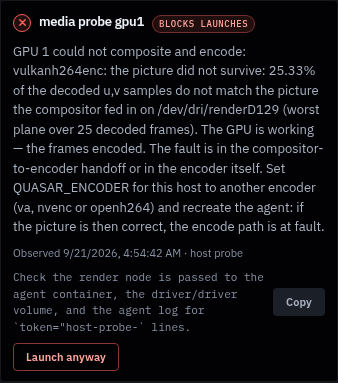
"Check the render node is passed to the agent container, the driver/driver volume, and the agent log for token="host-probe- lines."
631cebb / at #282 (de42f01 not yet applied) · diagnostic knob forcing the tiled (corrupt) path · generic remediation text, unrelated to the actual faultde42f01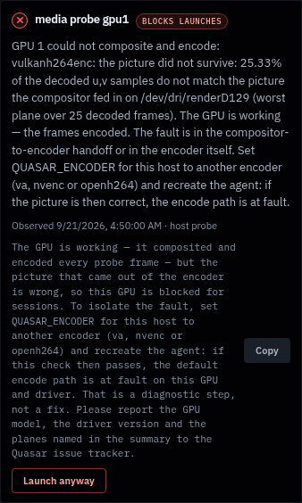
"The GPU is working — it composited and encoded every probe frame — but the picture that came out of the encoder is wrong, so this GPU is blocked for sessions. To isolate the fault, set QUASAR_ENCODER for this host to another encoder (va, nvenc or openh264) and recreate the agent: if this check then passes, the default encode path is at fault on this GPU and driver. That is a diagnostic step, not a fix. Please report the GPU model, the driver version and the planes named in the summary to the Quasar issue tracker."
631cebb, agent de42f01 · same diagnostic knob forcing the tiled (corrupt) path · the pixel-mismatch failure now carries its own remediation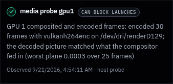
631cebb, agent de42f01 · knob cleared · check passes, worst plane 0.0003, no remediation shownSummary line unchanged across before/after: "…25.33% of the decoded u,v samples do not match…".
Part 3 — #288
Timeline, AMD test host, run 2 of 3 (all 3 identical in shape):
| time (UTC) | source | event | admission predicates at that moment |
|---|---|---|---|
| 04:31:58.7217 | agent | sent register | — |
| 04:31:58.718 | client | launch → 503 no_host_available | status online, capacity_detection unavailable, gpus.reported f, totals_fit f |
| 04:31:58.7265 | control plane | agent registered | (register sets capacity_detection='unavailable', gpus.reported=false) |
| 04:31:58.852 | client | launch → 503 no_host_available | same |
| 04:31:58.987 | client | launch → 503 no_host_available | same |
| 04:31:59.122 | client | launch → 503 no_host_available | same |
| 04:31:59.2169 | agent | host readiness: all checks passed or skipped (28), then capacity report sent | — |
| 04:31:59.2245 | control plane | agent capacity received | — |
| 04:31:59.257 | client | launch → 201 | online, ok, reported t, totals_fit t |
Window register → capacity received: 498 ms (run 1: 33.572→34.090 = 517 ms by CP log; run 2: 498 ms; run 3: 23.912→24.410 = 498 ms). 4 refusals per run. Readiness gate never involved (no host_not_ready); no hang (not #271). The control plane logged NO admission diagnosis for no_host_available — the exclusion was read from the DB predicates snapshotted after each response. Fable sizing: up to 15 s (handshake cap), typically < 3 s, recurs on every reconnect; readiness rides inside the capacity message by design.
Outcome: inherent → web retries no_host_available up to 20 s at 1 s with its own copy; NoHostRejection logs fleet counts (response unchanged); DB test TestRegisterToCapacityWindowRefusesThenAdmits pins the transition and the fail-open rule; harness waits now require capacity_detection == ok (registered ≠ reported). Gates: test-web, test-go, test-db, verify, preflight, leak scan — green on 683b4d1 and again on 9066bf6. Harness: AMD 104/0/1, NVIDIA 97/0/4 (= reference).
Visual check (the copy is new UI text): the #288 control plane was run on the development container with NO host connected, so every launch is refused no_host_available.
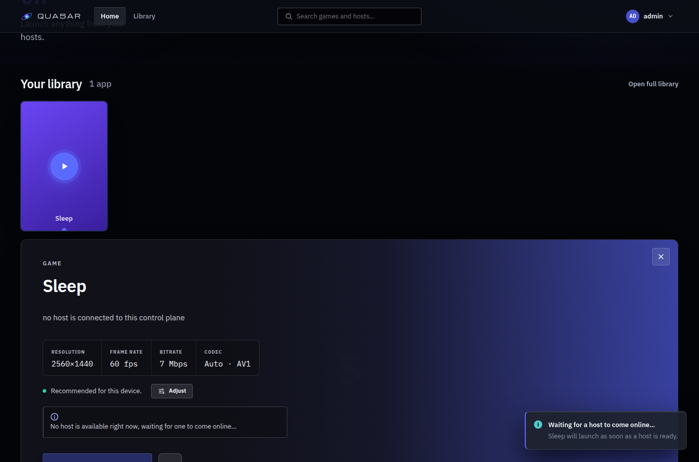
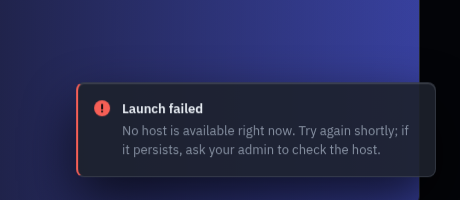
No design-handoff mock covers the pre-launch wait; the copy reuses the existing toast/band components and mirrors the existing capacity_exhausted wording. That stack was torn down (0 containers/volumes/networks).
Part 4 — #286
Directory counts, AMD test host, /run/quasar-agent:
| path | agent | before | during | after stop / after agent restart |
|---|---|---|---|---|
| normal stop | develop (pre-fix) | 0 | 4 (pulse, udev, wayland-1, wayland-1.lock) | 0 |
| killed while running | pre-fix | 0 | 4 | 3 (udev-<sid>, wayland-1, wayland-1.lock) |
| killed while starting (ends failed/host_lost) | pre-fix | 3 | 5 | 4 (both udev dirs + wayland pair) |
| normal stop | fix 64a0615 | 0 | 5 (+ udev-<sid>.owner) | 0 |
| killed while running | fix | 0 | 5 | 2 (wayland-1, wayland-1.lock only) |
| killed while starting (failed/host_lost) | fix | 2 | 5 | 2 (wayland pair only) |
Agent log after each fixed restart: token="udev-export-retired" removed=1 unattributable=0 errors=0.
Planted a markerless udev-* dir and a foreign-owner marker, restarted the fixed agent: both survived; log removed=0 unattributable=2; removed by hand afterwards. Normal-stop cleanup existed all along: Drop for VirtualDevices (the earlier issue comment saying nothing removes it was wrong — corrected on the issue). Wayland socket leftovers are compositor-owned, reused by the next session, bounded — out of scope.
Gates: test-rust (1777 passed, 0 failed), verify, preflight, leak scan. Harness: AMD 104/0/1 (= reference).
NVIDIA harness story: first full run 96/1/4 — row 4b's post-recovery launch ended host_lost ("host agent connection lost"); no agent logs survived. Then: --only=4b rerun 19/0/1; full rerun WITH agent/control-plane log capture 97/0/4 (= reference); three --only=4b,4c runs 25/0/1 each. Across those 5 runs: 0 udev-export warnings, 0 panics, and every run shows the pre-existing NVIDIA self-restart cudart-agent-restart-now (the control plane sees 1006 closes). Fable read the diff: no path in #286 can end the process or drop the connection. Verdict: the one failure is UNATTRIBUTED (its logs were not captured), consistent with the pre-existing self-restart race — filed #292. The loops also exposed #291 (quasar-media-probe-* runtime dirs leak when the agent dies mid-probe — same class as #286, pre-existing code) and #293 (harness scenario to encode the #286 proof).
Part 5 — #284
Fork: feature branch off develop 631cebb, merge of sync/upstream-stable (upstream stable @ 016b4fc, merged not rebased), plus the keymap test's re-sampling hardening (the fix itself was already on develop by content). Patch drift: the fork's five patches/*.patch are byte-identical to deploy/patches/vulkan/; Quasar's 11 gst-wayland-display-*.patch files are an authored record only (copied, never applied). Net production-code delta vs 631cebb: rendering.rs cursor hotspot fix, build.rs no longer links libvulkan, vulkan_bridge.c resolves vkDestroySemaphore via proc-address.
Results (before = pin 631cebb, after = 0b691b4):
| check | AMD before | AMD after | NVIDIA before | NVIDIA after |
|---|---|---|---|---|
| H.264 1080p row_std (3 frames) | 0.0,0.0,0.0 | 0.0,0.0,0.0 | 0.0,0.001,0.0 | 0.0,0.0,0.0 |
| H.264 720p row_std | 0.0,0.0,0.0 | 0.0,0.0,0.0 | — | — |
| AV1 1440p row_std (vulkanav1enc) | — | — | 0.0,0.0,0.0 | 0.0,0.0,0.0 |
| cursor: crosshair centre − true pointer (px) | +10.5, +11.5 | −0.5, +0.5 | +8.5, +9.5 (and +7.5, +9.5) | −0.5, +0.5 (second run; first run −2.5,−1.5 and −3.5,−1.5, frame/query skew) |
| pointer focus on a newly mapped X window | enter + 12 motion + 2 button | same | same | same |
keyboard (typed echo keys-ok-284 echoed) | yes | yes | yes | yes |
| audio energy before → during tone | 0 → 1.27 | 0 → 1.29 | 0 → 1.29 | 0 → 1.28 |
| agent fds across 10 teardowns | 24 steady | 24 steady | — | 50 steady |
| encoder | vulkanh264enc | vulkanh264enc | vulkanh264enc / vulkanav1enc | same |
VRAM (NVIDIA, whole GPU): baseline 34 MiB; after sessions 39 MiB; during XFCE 938 / 933 MiB; after each 39 MiB (before-pin and after-pin alike, two after-pin XFCE sessions).
NVENC fallback smoke (after pin): QUASAR_ENCODER=nvenc → agent "encoder resolved encoder=nvenc source=env", nvh264enc, 1080p 62 fps, row_std 0.0.
631cebb) vs after (pin 0b691b4)

631cebb / after 0b691b4 · row_std 0.0,0.0,0.0 both sides on both resolutions

631cebb / after 0b691b4
0b691b4 · 62 fps, row_std 0.0In each crop, the red cross marks the TRUE pointer position as read from XQueryPointer; the black crosshair is what the compositor actually drew. Before the fix the black crosshair is offset from the red cross; after the fix they coincide.
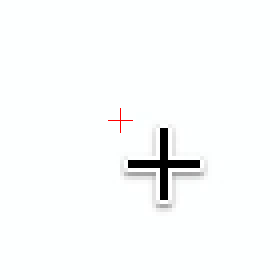
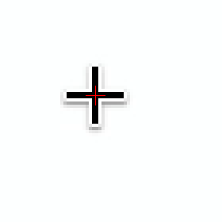
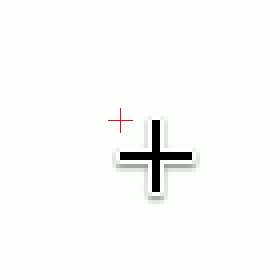
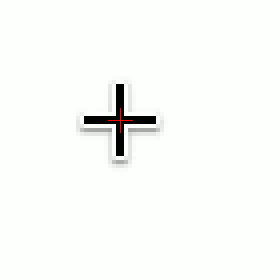
631cebb → 0b691b4).
NVIDIA: +8.5,+9.5px (and +7.5,+9.5px) before → −0.5,+0.5px after, second run (first run −2.5,−1.5 and −3.5,−1.5, frame/query skew).
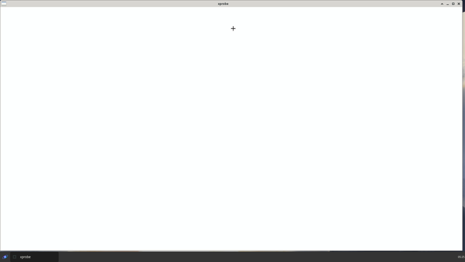
0b691b4 · enter + 12 motion + 2 button events observed on the newly mapped window · same on NVIDIA and on both pins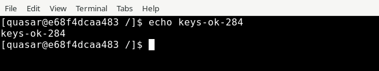
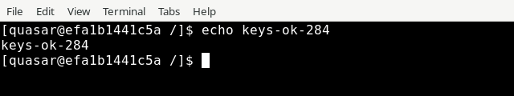
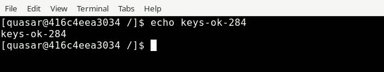
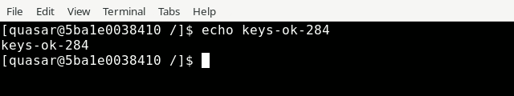
echo keys-ok-284, echoed correctly in all four crops · pin before 631cebb / after 0b691b4fd-count series across 10 teardowns:
| cycle | 0 | 1 | 2 | 3 | 4 | 5 | 6 | 7 | 8 | 9 | 10 |
|---|---|---|---|---|---|---|---|---|---|---|---|
| AMD, both pins (steady at 24) | 24 | 24 | 24 | 24 | 24 | 24 | 24 | 24 | 24 | 24 | 24 |
| NVIDIA, after pin (steady at 50) | 50 | 50 | 50 | 50 | 50 | 50 | 50 | 50 | 50 | 50 | 50 |
NVIDIA before-pin fd count was not separately measured (see brief); the "—" cells in the results table above reflect that.
Fault-harness totals for every run this part touched:
| run | AMD (pass/fail/unperformed) | NVIDIA (pass/fail/unperformed) |
|---|---|---|
| #284 | 104/0/1 | 97/0/4 |
| #288 | 104/0/1 | 97/0/4 |
| #286 | 104/0/1 | 96/1/4, then 97/0/4 |
| reference | 104/0/1 | 97/0/4 |
UNPERFORMED Bench run: nothing answers on port 9400 on either test host or the development container.
Unverified (Fable): HEVC on Vulkan, resize/vulkanscale rung steps (heaviest user of the changed semaphore teardown), VA/DMABuf on AMD, CUDA paths beyond the smoke, multi-GPU, hotplug.
What went wrong and what I did
- #285 was not one flake but four; each was proven with a discriminating experiment before its fix; the fourth is out of scope and filed (#290).
- A Sonnet worker skipped part of the #285 scope extension (43
baseline()test sites); caught in review by a hostile-env loop and converted. - An ad-hoc test run without
core=0dropped a root-ownednode-agent/core; removed before staging. - #288 first reproduction used http on a TLS stack (308s) — rerun over https.
- #287/#284 card/cursor capture: first attempts missed (cursor only drawn within 5 s of motion; relative pointer moves are accelerated) — method fixed (near-full-screen probe window, frame right after motion, true pointer from XQueryPointer).
- The first verify of #288 failed 14 bench checks because the git-excluded quasar-session skill was not linked in that worktree (environment, not code); rerun green after linking.
- The fd series first read the docker-init wrapper (3 fds); corrected to the agent process.
- A Haiku pin-consistency check read the wrong worktree; redone by hand.
- My earlier #286 issue comment claimed nothing removes the udev dir on a normal stop — wrong (Drop does); corrected on the issue.
Not verified
- A native Unraid install (the Unraid host was deliberately not touched).
- HEVC from a browser (the test browser cannot decode HEVC); HEVC on Vulkan for #284.
- Intel (no hardware). Multi-GPU hosts. Hotplug.
- #284: resize/vulkanscale rung steps, VA on AMD, CUDA beyond the NVENC smoke.
- #288 on NVIDIA (reproduced on AMD only, as the prompt allows).
- #287 on NVIDIA (the knob is AMD-diagnostic; NVIDIA cannot produce the mismatch).
- Bench run (quasar-bench unreachable).
Decisions waiting for the owner
fix/288-post-recreate-placement@9066bf6— recommend land: client-only retry + log-only diagnosis; admission unchanged; open questions: 20 s budget; toast disappears at 4 s (pre-existing #494 behaviour).fix/286-udev-dir-cleanup@64a0615— recommend land: boot-only, owner-scoped reclaim; follow-up issue for a harness scenario; pre-fix leftovers stay (reclaim by hand / reboot).chore/284-gwd-upstream-sync@b2d8e51— recommend land (fork develop already =0b691b4); do not delete the fork branch before landing is irrelevant now (develop reaches it); note stale Dockerfile.vulkan comments (lines ~599–637) not edited because they sit in the toolchain stage whose text keys the image content hash.- #282 ticket wording vs amendment 11 (Indeterminate ⇒ keep last definitive result, not
warn) — still waiting. - #290, #291, #292, #293 triage (all filed this run, needs-triage).
Nothing from this run was parked.
Issues filed this run
- #290 node-agent tests: the helper-test fake engine dies on EMFILE (bug, needs-triage)
- #291 node-agent: media-probe runtime dir leaks when the agent dies mid-probe (bug, needs-triage)
- #292 fault harness: row 4b on NVIDIA can fail host_lost when the agent self-restarts after the recovery launch (bug, needs-triage)
- #293 fault harness: encode the #286 kill-and-restart reclaim as a scenario (enhancement, needs-triage)
Tracker state: #281, #282, #272, #285, #287 CLOSED; #288, #286, #284 OPEN, labelled ready-for-human, each with an evidence comment.
Fable consults
| # | asked | said | what I did |
|---|---|---|---|
| 1 | #285 design + ownership flake | fork-inheritance diagnosis confirmed (posix_spawn copies the fd table); extend the rule to env READERS (43 baseline() sites) and capacity's internal reads; retry only the held error + /proc/locks on timeout | did all of it |
| 2 | Two further flakes (pending-map sweep, diag-registration hang) | map-parameterised sweep is right and sufficient; the hang is a dead fixture engine under fd pressure — file, don't fix; experiment: nofile 256 vs 65536 | confirmed 20/20 vs 0/20, filed #290 |
| 3 | #285 final diff | LAND after removing a stray root-owned core dump and trimming comments | did so, landed |
| 4 | #288 diagnosis | inherent and bounded (≤15 s, typically <3 s, every reconnect); readiness rides in capacity by design — do not split it; fail-open test already exists, add the transition test; web retry with its own 20 s budget, not the 60 s one; fix the harness wait | did all of it |
| 5 | #286 design | sibling marker (not inside the untrusted mount), boot-only inside post-application-retirement, explicit teardown retire + Drop backstop, poisoned-mutex tolerance, no legacy journal reclaim required | did it (legacy journal reclaim deliberately left out and noted) |
| 6 | #287 final diff | LAND with one should-fix (a remediation line after the result) | added the test, landed |
| 7 | #288 final diff | HAND OVER; should-fixes: issue-tag sweep, stale line numbers in test comments, a misnamed anchor test, frozen toast copy on a code flip | all fixed in 9066bf6 |
| 8 | #286 final diff | HAND OVER; should-fixes: sid validation in publish/retire, symlinked/oversized marker tests, log retire errors, correct a doc line; follow-up harness issue | all fixed in 64a0615; follow-up → #293 |
| 9 | #284 final review | HAND OVER; correction: the sync also carries build.rs + vulkan_bridge.c changes from the av1 branch's merge; stale Dockerfile comments; fast-forward (not merge) fork develop | corrected the pins doc (b2d8e51), left the Dockerfile comments for the owner, fast-forwarded |
| 10 | #286 NVIDIA row-4b failure | no #286 path can drop the connection; host_lost is only the CP seeing the connection close; likely the pre-existing NVIDIA self-restart race; one pass is not enough — read captured logs and loop 4b,4c | did: 5 clean runs, every one shows the self-restart, 0 udev warnings, 0 panics; filed #292 |
No frozen-contract change was needed anywhere (Fable consult point 3 never triggered).
Models used
| task | model |
|---|---|
| Plan, every review, every gate decision, diagnosis, hardware runs, commits/pushes/landings, tracker | Opus 5 (primary) |
| #285 implementation (env seams) | Sonnet |
| #287 implementation | Sonnet |
| #288 implementation + review follow-ups | Sonnet |
| #286 implementation + review follow-ups | Sonnet |
| This report's HTML | Sonnet |
| #285 comment wording pass | Haiku |
| #284 pin-consistency check (it read the wrong worktree; redone by hand) | Haiku |
| The 10 consults/reviews above | Fable |